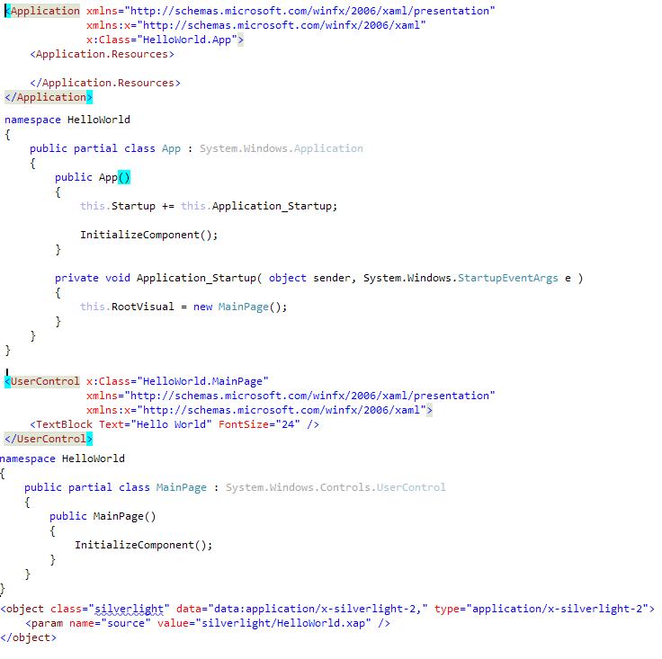
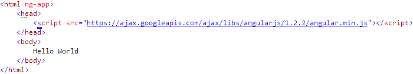

Windows to Web
AngularJS for XAML developers
Jeff Yates / blog.somewhatabstract.com / @jefftunes

12 years
Windows
Web


ng-app
Silverlight
Angular
No code behind required
<div ng-app/><div data-ng-app/>Data Binding
Hello {{textStuff}}
Hello {{textStuff}}
VS